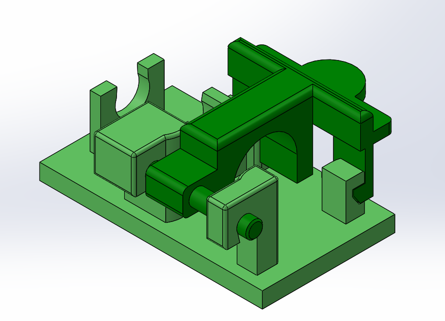
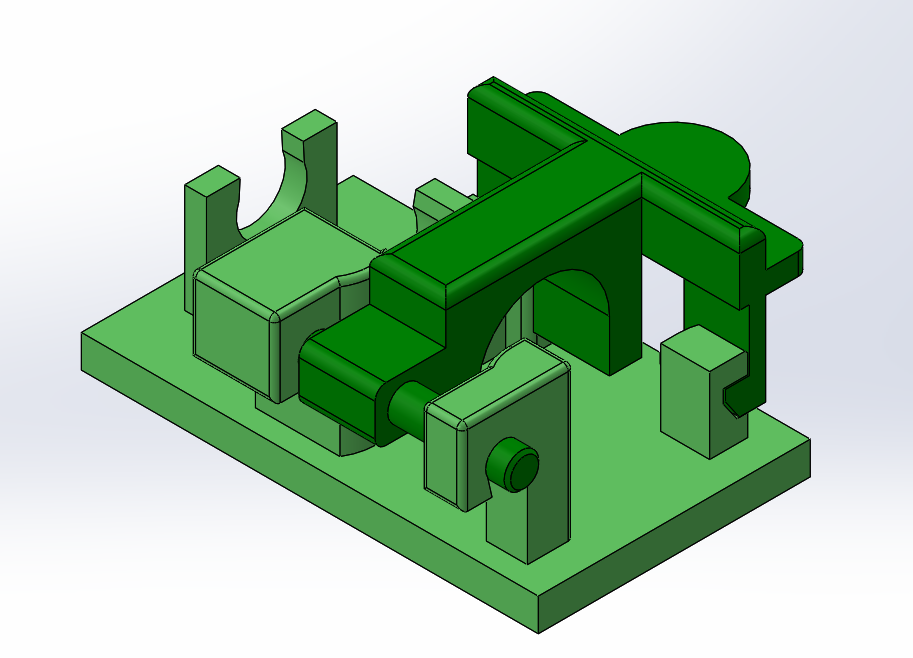

Approach
After being tasked with designing and prototyping fixtures that would help stabilize the components during
tests on the dummy model, I started to sketch some ideas of how this fixture would operate and function.
Then I started designing the fixtures in SOLIDWORKS. I wanted the fixture to have a couple snap fits to
the component as well as a snap-fit hinge for easy placement/removal of the component.
After finalizing the designs, I test printed the fixtures with Durable Resin on the SLA printer.
Following a few test prints, adjustments were made on the designs of the fixtures. After a few trial
test runs, the fixtures were ready to be used for further testing.
Skills Employed
- SOLIDWORKS 3D CAD model
- Snap-fit designs
- 3D Printing SLA
- Machine shop tool use (tapping, drills, sanding)
- Testing fixture design/mechanical testing

 
